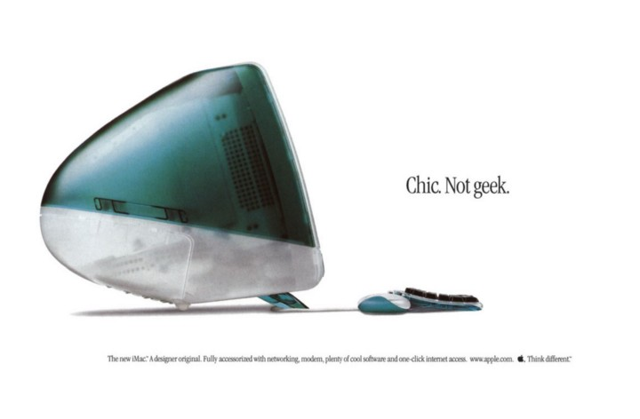
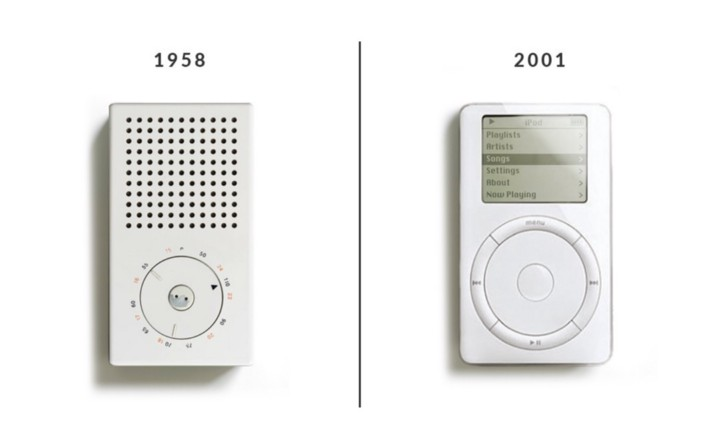

Apple design is
beautiful
simple
human
good design
is beautiful

Aesthetic-Usability Effect
Users oftern perceive aesthetically pleasing design as a design that's more usable.
T3 transistor radio, Braun 1958
iPod, Apple 2001

Dieter Rams
Jonathan Ive
"good design is as little design as possible"
Dieter Rams
good design is simple
His main demand was "SIMPLIFY"!
If he wanted a function he should be able to get there in three clicks.
And the click should be intuitive.
Walter Isaacson's: Steve Jobs Biography
Hick's Law
The time it takes to make a decision increases with the number and complexity of choices available.
William Edmund Hick and Ray Hyman
good deisgn
is human
Von Restorff or Isolation Effect
When multiple similar objects are present, the one that differs from the rest is most likely to be remembered.
Hedwig Von Restorff